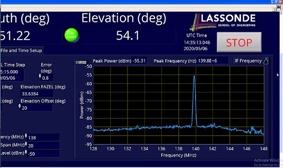
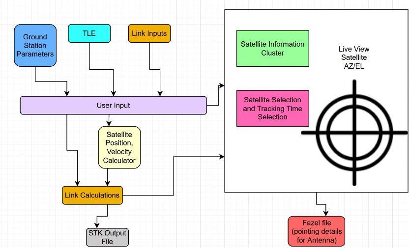
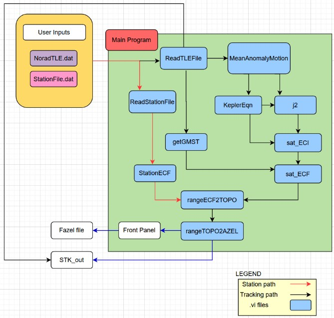

Motivation
To receive data from a satellite, a ground station's antenna has to follow it across the sky. For the final-year Space Hardware course, I built LabVIEW software that works out where a satellite will be and how to point the antenna at it.
How it works
Inputs:
- Time window
- Ground station and antenna parameters
- Satellite orbital data in Two-Line Element (TLE) format
Outputs:
- Plots and lists of the satellites visible from the ground station
- Details for individual satellites
- Files for cross-checking results in STK (Systems Tool Kit)
- Antenna pointing files for tracking a pass
My role
- Software development in LabVIEW
- Orbital mechanics and coordinate conversions
- RF communications
- Testing
Screenshots


